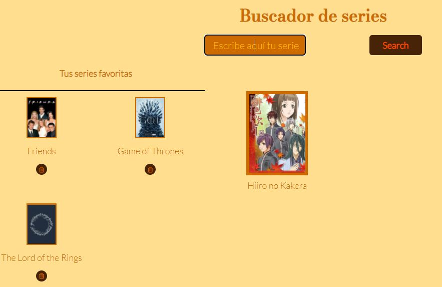
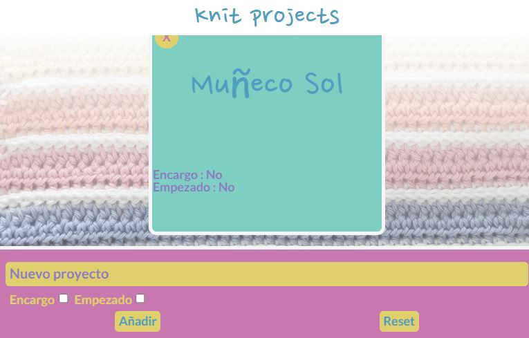
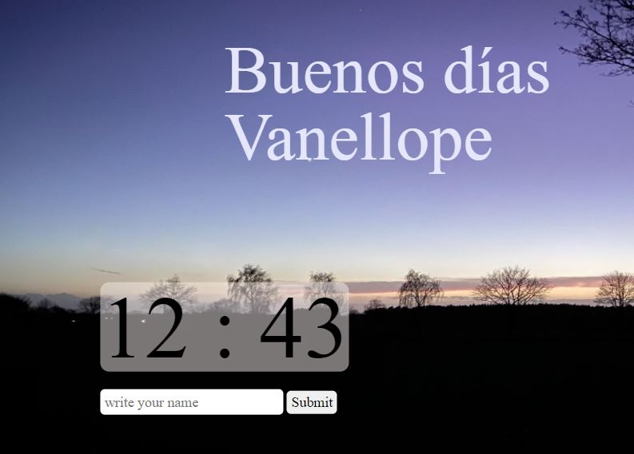

Descripción
La evolución en Adalab
Durante los meses de formación en Adalab he realizado distintos tipos de proyectos: El primero que realicé sola es la base de la web por la que te encuentras navegando, a la que he realizado diversas modificaciones de maquetación, así como he añadido funcionalidades tales como el menú hamburguesa mediante Java Script.
En el siguiente apartado encontrarás por orden de ejecución los ejercicios realizados en las evaluaciones de Adalab, algunas ya están modificadas y otras son completamente nuevas y de idea propia.
Mi intención es que sea una página completamente viva e ir añadiendo nuevos proyectos y más modificaciones de los que ya están presentes.
Proyectos
-

Buscador de series
Accede a la Web, realiza tu búsqueda y guarda tus series favoritas en la lista y si ya no te gusta, ¡borrala!
Cada vez que accedas a la web, tu selección permanecerá intacta en la caché de tu ordenador siempre que no la resetees.
Se trata del primer proyecto individual realizado por completo en JavaScript con el que puse a prueba mis conocimientos iniciales sobre este lenguaje.
-

Knit projects
Web con la que organizar y filtrar los proyectos kniting que estés realizando. Aunque aparentemente lo veas vacío, seguro que si consultas el código no te parece lo mismo.
Este proyecto comenzó siendo un gestor de clubs con el que me inicié en el uso de la biblioteca de Java Scrip, React. Realizamos este proyecto donde la mayor dificultad estaba en reprogramar nuestro cerebro.
Actualmente este proyecto está en plena fase de transformación, mi intención es completar las versiones tablet y desktop para hacerla totalmente responsive, también quiero implementar más funcionalidades como escoger entre distintas técnicas tejeriles o ordenarlos según prioridad de entrega.
-

Buscador de Personajes
Si te gusta la serie echa un vistazo a los personajes que han surgido hasta ahora, filtralos como quieras y... ¡A por los siguientes!
En este ejercicio final las directrices únicamente solicitaban una petición a la Api y algún filtro, pero no pude conformarme viendo que había tantos personajes decidí realizar la paginación (aún no es perfecta, pronto seguiré trabajando en ella)
A la hora de realizar los filtros me encontré con el handicap de no conocer la serie así que me las averigué para que en cada paginación los filtros se modifican de manera automática facilitando en cada momento las opciones necesarias.
Gracias a esto estoy buscando una nueva api a la que adaptar el diseño de la página, ya que creo que únicamente tendré que cambiar la maquetación para que sea más acorde con la nueva serie o película.
-

Google Extension
Landpage en la que estoy implementando distintas funcionalidades para practicar JavaScript Vanilla.
El fondo de pantalla cambia de forma random entre distintas imágenes extraídas de Flikr, al introducir tu nombre en el Input aoparecerá en tu saludo de Buenos días.
Actualmente sigo trabajando en este proyecto para implementar más funcionalidades, como que pase de Buenos días a Buenas tardes y noches, añadir frases motivacionales o curiosas, mejorar la funcionalidad del Input, etc.